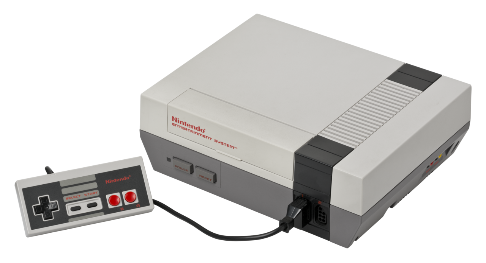
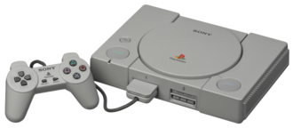
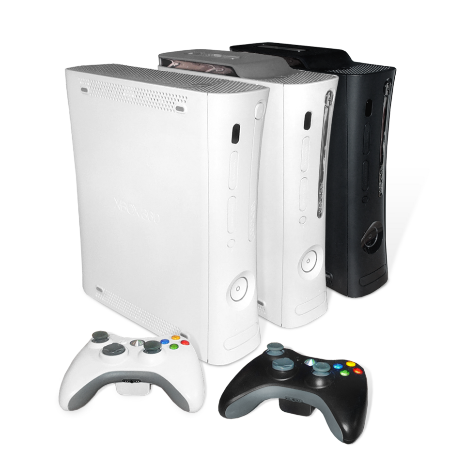
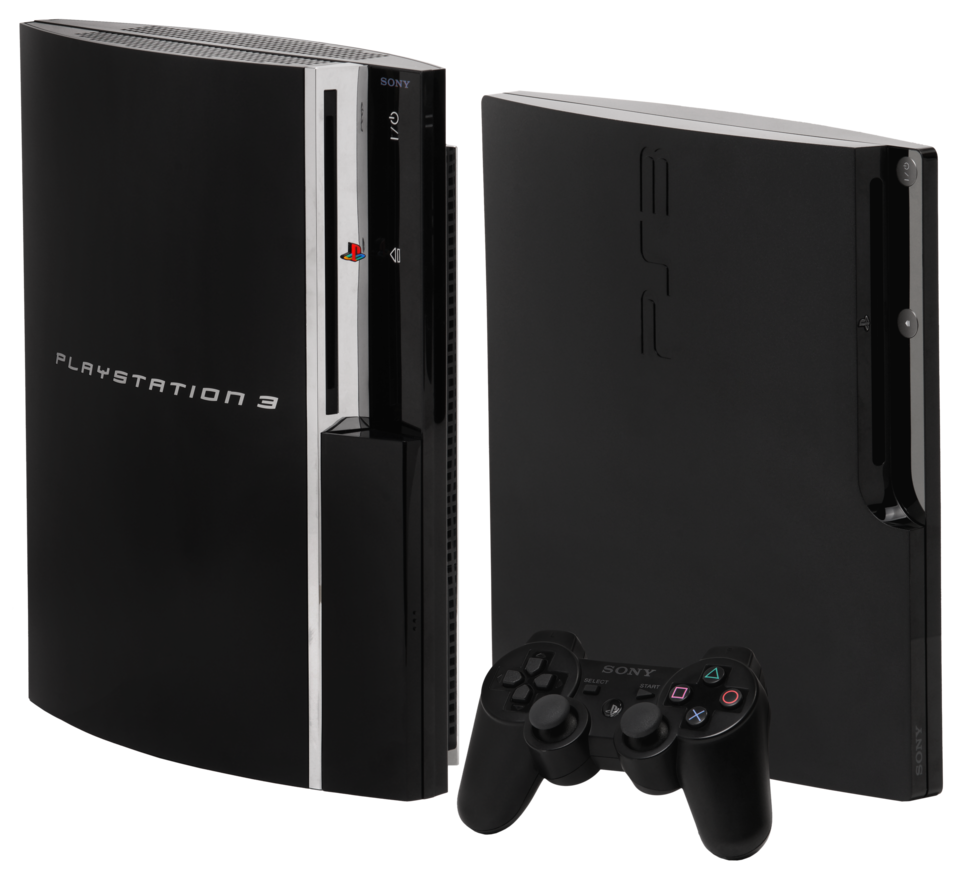

Timeline Consolelor
Atari 2600 (1977)
Era home-console — primele experiențe
- CPU: MOS 6507 @ 1.19 MHz
- RAM: 128 bytes (!)
- ROM Cartușe: 4 KB
- Rezoluție: 160×192 pixeli
- Culori: 128 (4 per scanline)
- Preț la lansare: $199
Prima consolă cu procesor programabil și cartușe interschimbabile. De aici a început totul pentru gaming acasă.

Nintendo Entertainment System (1983)
Salvarea industriei după crash-ul din '83
- CPU: Ricoh 2A03 @ 1.79 MHz
- RAM: 2 KB
- VRAM: 2 KB
- Rezoluție: 256×240 pixeli
- Culori: 52 din 64
- Vânzări: 61+ milioane unități
NES a reconstruit încrederea în console. GamePak și controlul strict al calității jocurilor au fost cheia.

Super Nintendo Entertainment System (1990)
Era 16-bit — culoare și soundtrack-uri memorabile
- CPU: Ricoh 5A22 @ 3.58 MHz (16-bit)
- RAM: 128 KB
- VRAM: 64 KB
- Rezoluție: 256×224 pixeli
- Culori: 32,768 (256 pe ecran)
- Vânzări: 49.1 milioane unități
Mode 7 pentru rotație și scaling. Audio superior cu chip Sony SPC700. Epoca Super Mario World și Chrono Trigger.

PlayStation 1 (1994)
Tranziția la 3D real-time — schimbarea regulilor
- CPU: MIPS R3000 @ 33.87 MHz
- GPU: 1 MB VRAM
- RAM: 2 MB SDRAM
- Rezoluție: 320×240 - 640×480 pixeli
- Poligoane: 360,000/s
- Vânzări: 102.4 milioane unități
Prima consolă majoră full-3D. CD-ROM-ul a permis jocuri mai mari și FMV. Final Fantasy VII, Metal Gear Solid.

PlayStation 2 (2000)
Dominația absolută — cea mai vândută consolă din istorie
- CPU: Emotion Engine @ 294 MHz
- GPU: Graphics Synthesizer @ 150 MHz
- RAM: 32 MB RDRAM
- VRAM: 4 MB eDRAM
- Poligoane: 75 milioane/s
- Vânzări: 155 milioane unități
Cel mai de succes sistem de gaming. DVD player încorporat. GTA, God of War, Shadow of the Colossus.

Xbox 360 (2005)
Începutul erei HD și online gaming mainstream
- CPU: Xenon 3-core @ 3.2 GHz
- GPU: ATI Xenos @ 500 MHz
- RAM: 512 MB GDDR3
- Rezoluție: 720p / 1080p
- Xbox Live: Online multiplayer
- Vânzări: 84 milioane unități
Prima consolă HD de succes. Xbox Live a revoluționat online gaming-ul. Halo 3, Gears of War, Mass Effect.

PlayStation 3 (2006)
Blu-ray, HDD și HD gaming — powerhouse multimedia
- CPU: Cell BE 8-core @ 3.2 GHz
- GPU: RSX @ 550 MHz
- RAM: 256 MB XDR + 256 MB GDDR3
- Blu-ray: 50 GB pe disc
- HDD: 20-500 GB încorporat
- Vânzări: 87 milioane unități
Arhitectură Cell ambițioasă. Primul Blu-ray player accesibil. The Last of Us, Uncharted, Metal Gear Solid 4.

PlayStation 4 / Xbox One (2013)
Era modernă — digital, streaming și social gaming
- CPU: AMD Jaguar 8-core @ 1.6-1.75 GHz
- GPU: AMD GCN @ 1.84 TFLOPS (PS4)
- RAM: 8 GB GDDR5 (PS4)
- HDD: 500 GB - 1 TB
- Share Button: Streaming integrat
- Vânzări: 117M (PS4) / 51M (XB1)
Arhitectură x86 pentru dezvoltare ușoară. PS4 Pro/Xbox One X au adus 4K gaming. God of War, Spider-Man, Horizon.

PlayStation 5 / Xbox Series X (2020)
Ray tracing hardware și SSD-uri rapide
- CPU: AMD Zen 2 8-core @ 3.5 GHz
- GPU: RDNA 2 @ 10.3 TFLOPS (PS5)
- RAM: 16 GB GDDR6
- SSD: 5.5 GB/s (PS5)
- Ray Tracing: Hardware-accelerated
- Rezoluție: 4K nativă, 8K suport
Generația ray tracing și loading times aproape zero. 120 FPS, 3D audio, haptic feedback.